|
Roda JC - FC Den Bosch (4-1) 21-9-2001 |
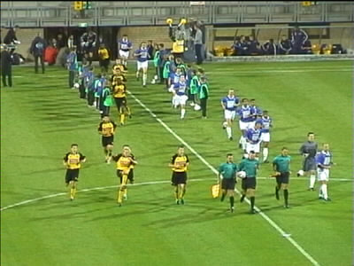
De eerste wedstrijd van Roda onder trainer Leekens
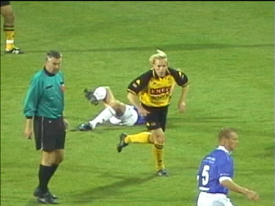
Van der Luer in een glansrol, in de basis.
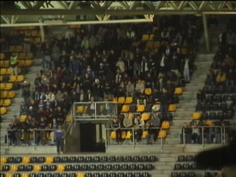
100 Bosschenaren in het uitvak.
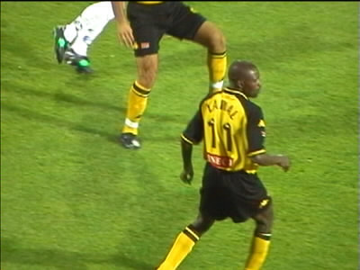
Lawal, nu zonder blitse pleister, maar met gladde coup.
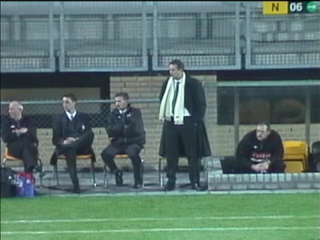
"Sjaale Sjors" met Coolen als assistent.
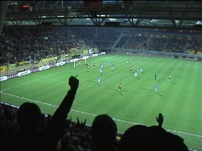
Soetaers scoort 1-0.
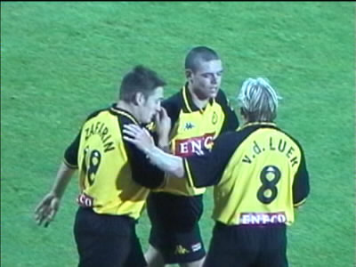
Vreugde na de tweede Soetaers-goal.
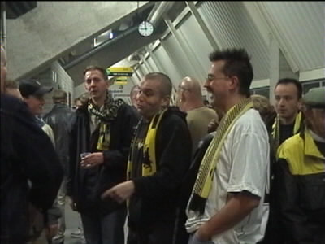
Prominenten bij Z16 part one.
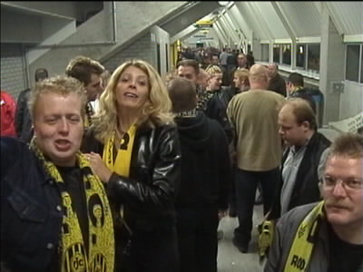
Part two, al wat minder prominent, hoewel.....
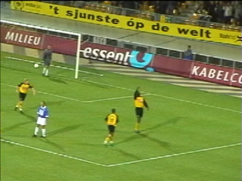
Vrede scoort 3-0.
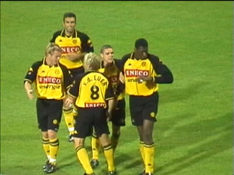
Regilio bekijkt het laatste nieuws op zijn message-watch.
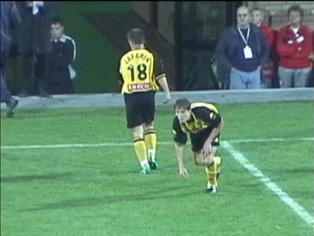
Tomassic voor Zafarin met het vaste ritueel: eerst de grond
aanraken en dan een kruisteken maken.
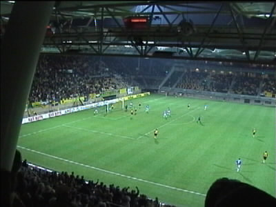
De tegentreffer door Van Eede.
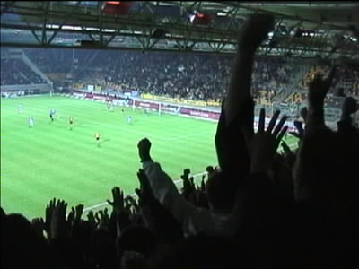
Anastasiou kan het nog: 4-1.
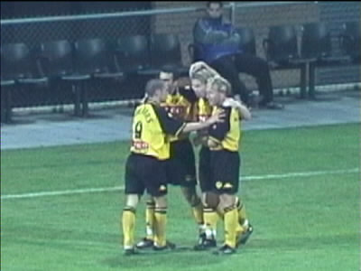
We zijn vandaag zo vrolijk.....
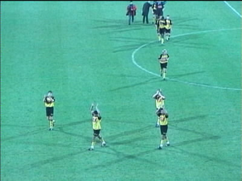
Geen "wave", slechts handjeklap. Het wrange gevoel na
Utrecht heeft duidelijk sporen nagelaten bij de spelers!
Hier werden ze immers door "ons" uitgejoeld.
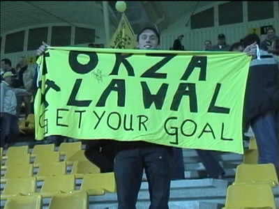
Een van de e.o.v.g.l.f.c.-leden toont trots zijn vlag.
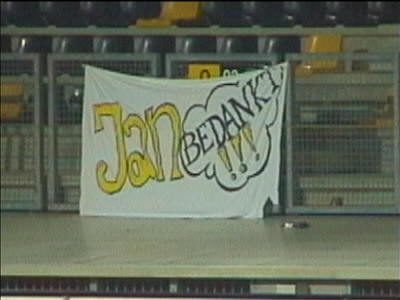
Is dat cynisch bedoeld?
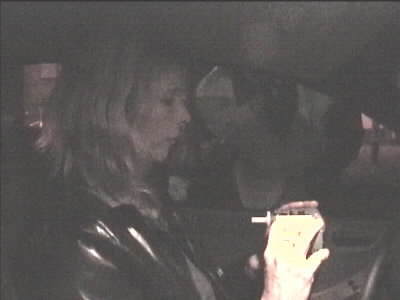
Bij een alcoholcontrole op de Kaalheidersteenweg bleek dat
ons stadionbier in weerwil van Dr. Nol Ordnans
gaschromatografische bevindingen (zie Voice 4) toch
evenementenbier is. Hahahahahaha!
©KPD